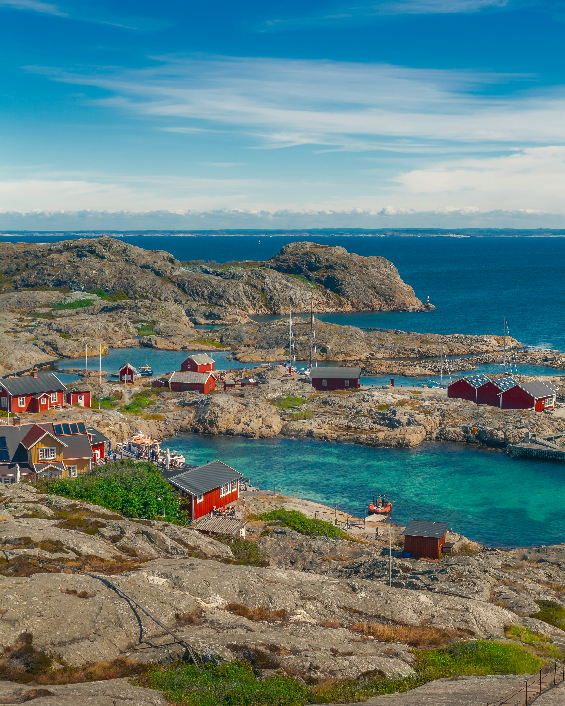
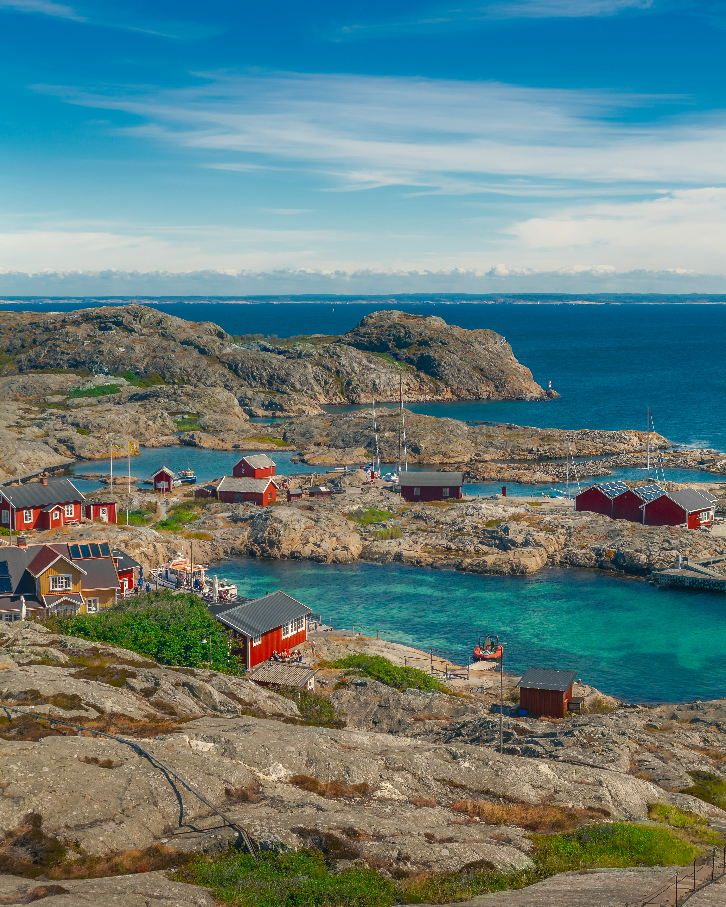
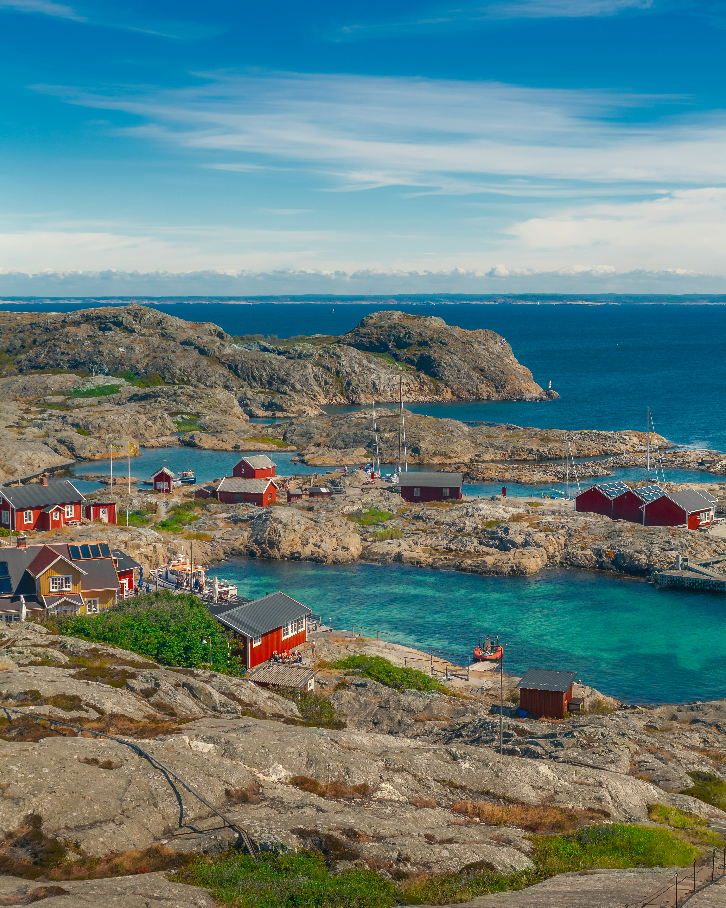

LADAKH
Capital: Leh
Altitude: 11,500 feet
Located in the northernmost part of the Indian state of Jammu and Kashmir
Places To Visit: Pangong Lake, Khardung La, Tso Moriri Lake, Nubra Valley


 


Altitude: 11,500 feet
Located in the northernmost part of the Indian state of Jammu and Kashmir
Places To Visit: Pangong Lake, Khardung La, Tso Moriri Lake, Nubra Valley
